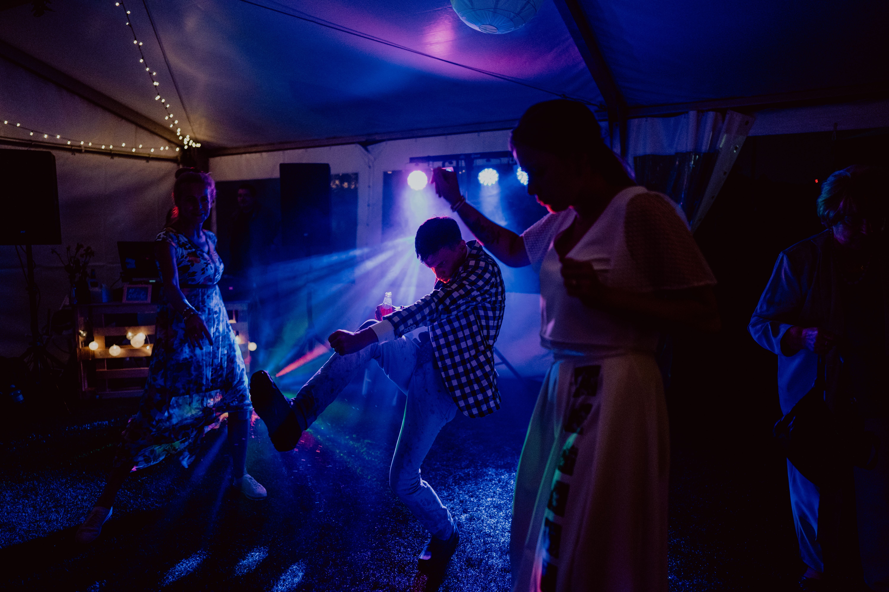

Firemní párty

Firemní večírky dokážou být hodně zvláštní disciplína.
Jak propašovat autenticitu, otevřenost a hravost do prostředí,
kam spousta lidí už jen přišla z povinnosti?
Nečekejte marketing. Čekejte real shit.
Jenže on často nikdo nechce být „ten první".
Pohybuje se v bezpečném prostředí oddělených skupinek
a prolnutí brání i zabiják autentického kontaktu – small talk.
Ajťáci v jednom chumlu a holky z kanclu na úplně opačné straně ringu.
A z toho má vzniknout jiskra?
Za ta léta naprosto chápu, že začátky bývají opatrné.
Trapnost číhá za každou frází.
Můj úkol je, aby se opatrně i nekončilo.
Abychom odložili společenské masky a propíchli bubliny komfortních zón.
Aby život přetekl přes stavidla přehrady strojené opatrnosti.
Snažím se vždy jít po stopě toho momentu, kdy to „přestane být korporát".
Život a energie si najdou cestu. Stačí chvíli poslouchat.
Prostor odpoví sám. Hodí mi nápovědu.
Tenhle strejda má rád Dire Straits.
Tahle tetka vyrůstala na Madonně.
A cože? – Tahle kočička zná Geese!?
Jestli toužíte po hyperkorektním uvaděči á la Jan Čenský,
objednejte si raději prince.
Já jsem velmi dobře vychovaná opice vycvičená na baletu.
Tu mi ujede ručička, tuhle se zatoulá kolínko,
a když se zadaří, umím lidi i házet do kotle.
Když chcete Vaše miláčky zrelaxovat,
od určité chvíle je dobré se nechat urvat.
Pokud oceníte vkusný podkres, nemám problém.
Jako bytostný estét moc rád zajistím výběr hudby
bez ohledu na počet tanečníků na place.
Ale pokud hledáte nadžánrového chameleona,
který uspokojí všechny možné hudební chutě
a nebojí se případně vyjít vstříc i náročnějšímu posluchači –
slyšte zvuk polnice.
Nejsem pro každého. A upřímně – ani nechci být.
Jinak jsem pro každou špatnost.
Moc mě baví nabourávat ten stereotyp –
že tam většina lidí není naplno.
A když to secvakne… najednou chtějí být.